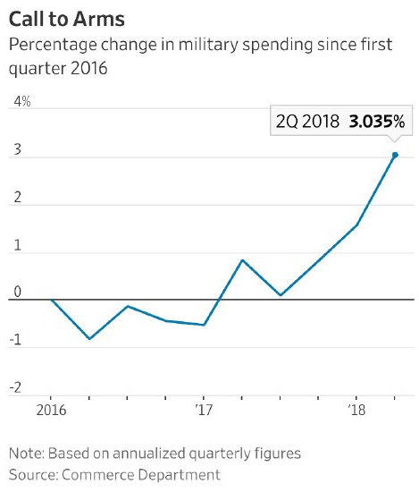
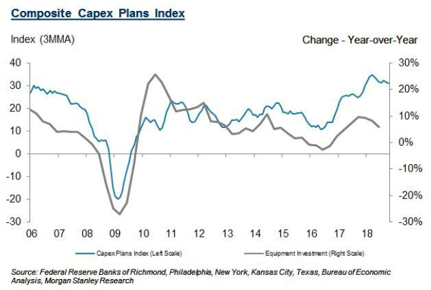

국내 보수 언론이 보도하지 않는 미국 경제 활황의 비결
게시: 2018-11-03T20:58:59+09:00
요즘 한국 경기가 어렵다는 신문 기사가 많이 나옵니다. 체감적으로도 어려운 것 같습니다. 실은 제가 느끼기에는 리먼 사태 이후, 조금 더 과장하면 IMF 이후 젊은이들 취업은 항상 어려웠고 자영업자 장사도 계속 어려웠습니다. 그러나 놀랍게도, 각종 경제지표를 보면 그동안 우리나라는 MB와 503 정권 하에서 대단한 호황이었다고 합니다. 아마도 그런 호황의 달콤한 과실은 주로 기업들과 자본가들이 다 따먹었기 때문에, 대기업에 근무하지 않는 대부분의 국민들은 그 혜택을 누리지 못했던 것일까요 ? 하긴 양극화는 점점 심해진다고 하지요.
생각해보면 그동안에도 보수 언론의 경제란에서도 서민 경제를 걱정해주는 경우가 종종 있었습니다. 김영란법이나 노인기초연금처럼 정부에서 사회정의 또는 사회복지를 위한 규제나 법령을 새로 만들려고 하면 항상 '식당 이모'님들과 '아파트 경비원'님들의 일자리가 날아간다고 대성통곡하는 기사가 대단했지요. 그러면서 꼭 나오는, 이제는 진부하다 못해 냄새까지 나는 상투적인 표현이 '지옥으로 가는 길은 선의로 포장되어 있다'였습니다. 서민들에게 잘 해주려는 의도는 알겠으나 그래봐야 다치는 것 서민 뿐이니 그냥 현체제 그대로 살자는 것이 보수 언론들의 선동질이었지요.
현 정권에서 추진하는 52시간 근무제나 최저임금 대폭 인상은 분명히 서민들을 위한 제도입니다. 그러나 또 분명한 것은 그나마 경제지표 상으로는 나쁘지 않았던 한국 경제가 그런 경제지표에서조차 약간씩 나빠지는 조짐을 보인다는 것입니다. 이것이 그동안 미국 연준의 양적완화로 강제부양되었던 세계 경제가 금리 인상과 함께 쭈그러들 때가 되어서 그런 것인지, 아니면 정말 이런 최저임금 인상 제도들 때문인지는 모르겠습니다. 최근 국내 언론에 따르면 영화 안시성이 실패한 이유가 재미가 없어서가 아니라 52시간 근무제 때문에 늘어난 제작비 탓인 것처럼 되어 있던데, 아무튼 보수언론에 따르면 모든 문제는 결국 52시간 근무제와 최저임금 때문이더군요.
그런 보수언론이 줄기차게 비교하는 대상이 미국입니다. 요즘 미국 경제 잘 나갑니다. 미국 경제가 잘 나가는 이유에 대해서는 그동안 말이 많았지요. 구글과 애플, 페이스북 등으로 대표되는 기술 혁신과 우버로 대표되는 규제 철폐, 대대적인 감세 정책, 심지어 트럼프의 MAGA (Make America Great Again)으로 대표되는 보호무역 정책이 그 이유라고들 이야기되었습니다.
최근 미국 언론에 다음과 같은 두 기사가 실렸습니다. 신기하게도, 그토록 미국 좋아하는 보수 언론에서는 이 기사에 대해서 전혀 언급이 없더군요. 보수 언론에서는 매우 싫어하는 뉴스 같아서 제가 다음에 간략히 간추렸습니다.
1. 미국 경제가 활황인 이유 중 큰 것은 정부 재정 지출
"A Big Reason U.S. Economy Is Accelerating: Government Spending"
https://www.wsj.com/articles/government-and-military-spending-fuel-u-s-growth-1540459800
2. 트럼프 감세에 의한 기업의 투자와 고용 확대는 아직도 기미가 보이지 않는다
"The Trump tax-cut stimulus still isn’t here"
https://finance.yahoo.com/news/trump-tax-cut-stimulus-still-isnt-185207034.html
미국 경제가 2017년 4월 이후 2.9% 성장했는데, 이는 2009~2017 사이의 연평균 2.2% 성장보다 훨씬 빠른 것입니다. 그런데 월스트리트저널의 분석에 따르면 그 초과 성장분의 절반은 정부 지출 증가 떄문입니다. 특히 그 중에서도 방위비 지출 증가가 큰 역할을 했습니다.
미국 방위비는 2009~2017 사이의 2.1% 감소에서 2017년 4월 이후 2.9% 증가로 전환되었습니다. 이 부분이 미국 전체 경제 성장에 0.21%p의 플러스가 되었다는 것입니다. 방위비 이외의 기타 정부 지출 증가까지 합하면 0.34%p가 됩니다. 결국 2017년 4월 이후의 더 높아진 경제 성장률 0.7%p 중 절반 정도는 정부 지출 증가 덕분인 셈입니다.

(미국 방위비 지출 추이)
그에 비해, 보수파가 그토록 부르짖던 감세에 의한 기업 투자의 증가와 그에 따른 고용 증대 효과는 보이지 않고 있습니다. 작년 12월에 기업에 대한 법인세를 35%에서 21%로 크게 인하해주었으나 약 1년이 지난 지금 그로 인해 투자와 고용을 늘렸다는 기업은 12%에 그쳤습니다. 3%는 오히려 줄였다고 응답했고, 절대 다수인 81%의 기업들은 '아무 변화없음'이라고 응답한 것이지요. 결국 감세는 기업들과 부자들의 주머니를 두둑하게 해주는 것이 확실하지만, 그로 인해 투자와 고용이 증가한다는 것은 현실이 아닌 것입니다.

(미국 기업 자본 지출 및 설비 투자 추이)
결국 미국발 뉴스에 따르면 경기 활황을 위해서는 법인세 인하해주는 것은 바보짓이고, 정부 지출을 늘려야 합니다. 그러나 재정 균형을 깨지 않고 정부 지출을 늘리자면 세금을 더 걷어야 하므로 보수파들은 아주 싫어할 뉴스인 셈이지요. 그래서 국내 보수 언론에서는 절대 보도하지 않는 뉴스가 되었나 봅니다.